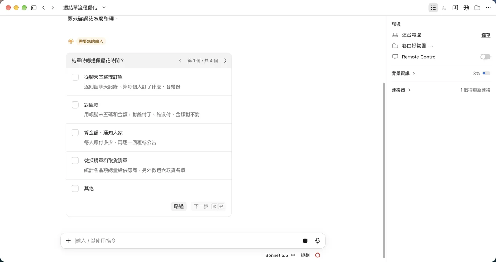
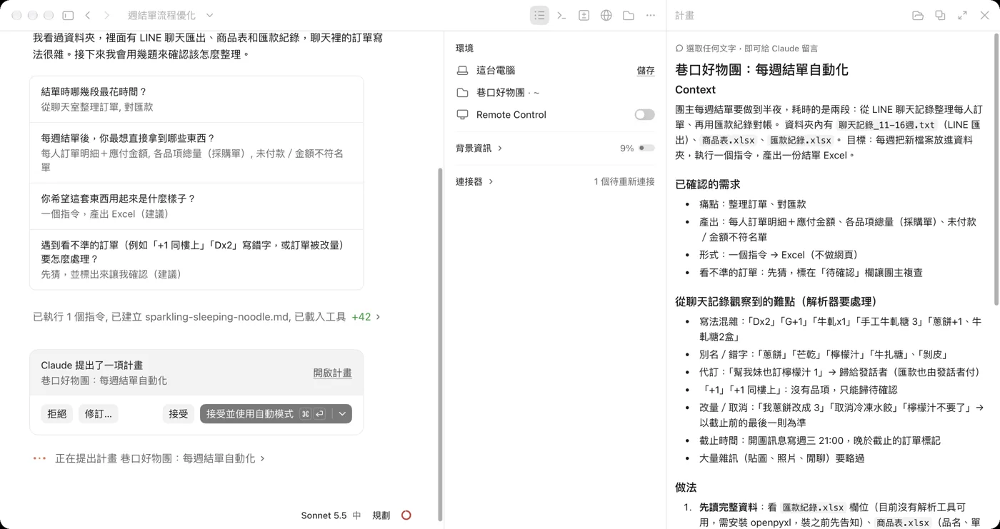
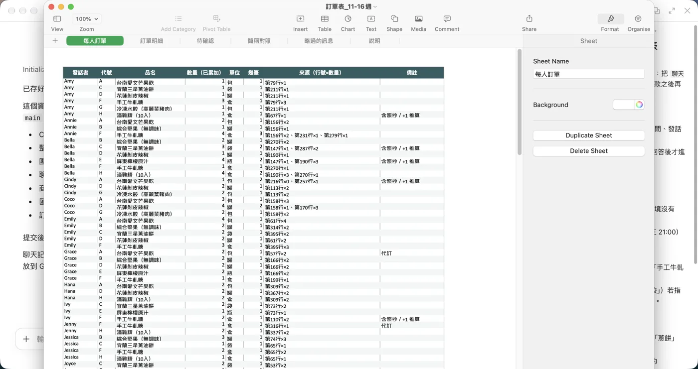
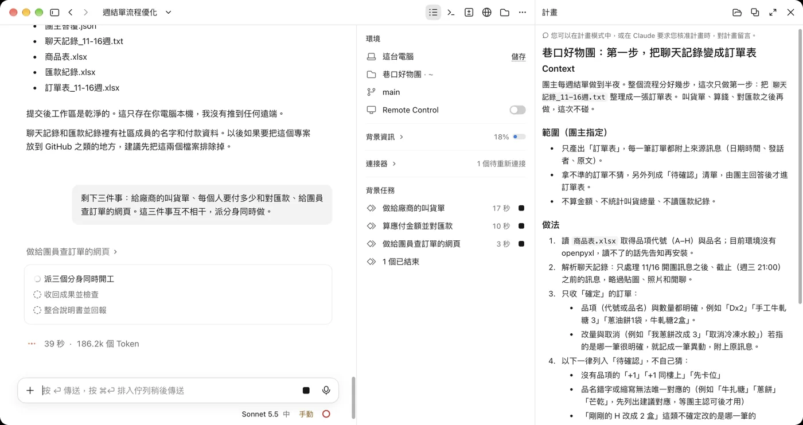
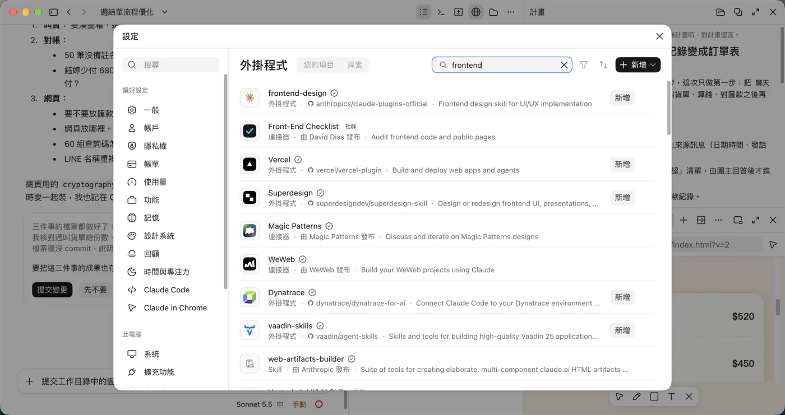
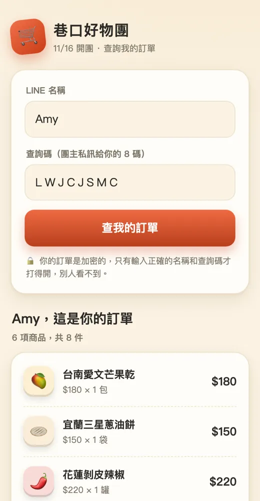
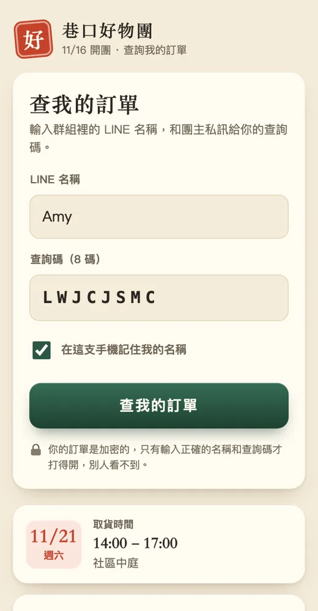
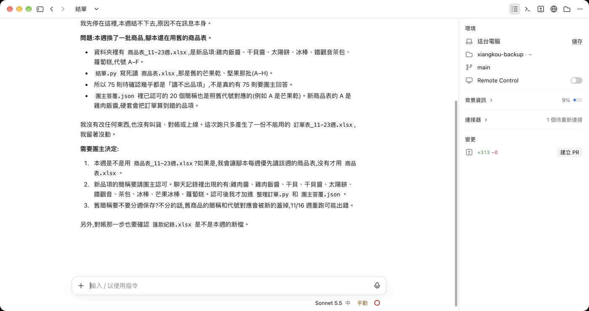

綜合專題：從一句抱怨，做到上線
社區團購的團主阿琪，每個禮拜開一團，LINE 群組裡一百八十個鄰居在底下回「+1」「同上」「我改成 3 包」「幫我媽也訂一份」。截止以後，她要把幾百則訊息從頭滑到尾，一筆一筆抄成訂單、算每個人要付多少、跟廠商叫貨、對匯款的末五碼，每個禮拜都弄到半夜。前幾課都是先知道要請 Claude 做什麼；這一課教的是順序：手上只有一句抱怨的時候，怎麼一步一步做成一個真的在用的工具。今天同樣要用付費版的 Claude Code。不會的，就問 Claude。
看不到影片？到 YouTube 觀看。每一段的一分鐘短片在 AI 實戰短片播放清單。
先下載示範檔案
「巷口好物團」一週的群組聊天記錄、商品表和匯款紀錄，團員的名字、匯款全部是假的。聊天記錄照 LINE「傳送聊天記錄」存出來的文字檔格式做，裡面故意放了同上、改數量、取消、幫家人代訂、只回 +1、截止後才喊的訊息。「第二週」資料夾是下一週的資料，最後一步才用。
想用自己的群組照做，先把聊天記錄存成文字檔：
打開群組，點右上角的選單 → 設定 → 傳送聊天記錄，存到雲端硬碟或寄給自己，再下載到電腦。
打開群組，點右上角的選單 → 儲存聊天（有的版本叫「傳送聊天記錄」），存成 .txt。
真的群組記錄裡有鄰居的名字，這份檔案只留在自己的電腦，D 段會講怎麼放上網才不會一起公開。
A｜先讓它問你：規劃模式
規劃模式是 Claude Code 的一種工作模式。它會讀檔案、會想，可是不改任何東西，最後交一份計畫給你看，你同意了它才開始做。不知道要叫它做什麼的時候，就先用這個模式。
- 打開 Claude 電腦版的 Code 分頁，用輸入框下面的資料夾名字 → 開啟資料夾…，選「巷口好物團」，按 信任工作區。
- 點輸入框右下角的 手動，換成 規劃（說明寫「進行變更前先建立計畫」）。
- 說一句抱怨就好：
它先把資料夾讀過一遍，然後跳出四題選擇題：哪幾段最花時間、最想拿到什麼、用起來希望是什麼樣子，還有「遇到看不準的訂單要怎麼處理」。最後一題是你自己很難想到要交代的。每一題都有它建議的選項，點一下就好。

回答完，右邊打開一份計畫，把它在聊天記錄裡看到的難點一條一條列出來。底下有「拒絕／修訂…／接受／接受並使用自動模式」。計畫不是考卷，可以改，也可以砍。按 修訂…，說：

B｜先做一小塊：附上來源，拿不準的列出來
計畫再好，也不要一次做完。一次做出一大包，錯了也不知道錯在哪裡。按 接受 之後，它寫了一支程式拆聊天記錄，第一輪只收確定的訂單，其他的放進「待確認」，整理成問題問你：這些簡稱對不對、幫家人代訂的算誰、只回 +1 的算什麼、截止後才喊的收不收。回答完，它照你的規矩再跑一次，來回兩三輪，待確認的就清空了。
它也會自己發現問題。示範時它發現「照上一位抄」會抄到別人幫家人代訂的那一份，這種錯，人工抄單也很容易犯。
你回答過的規矩，記進說明書（Day 6），下禮拜就不用再問；做好一塊就存一個版本（Day 5）：

C｜剩下的分頭做：子代理和外掛
子代理是 Claude Code 派出去的分身。每個分身拿到一件事、有自己的一張工作桌，做完只把結果交回來。互不相干的事才適合分頭做；要接力的事，就不適合。分身越多，用量也用掉越多（Day 5）。

做好的查訂單網頁能用，可是很陽春。這時候可以裝一個外掛。外掛是別人打包好的一整包，裡面可以有技能包、子代理、Hook，也可以有連接器，裝一次全部到位。
- 按輸入框左邊的 + → 外掛程式 → 瀏覽外掛程式。
- 搜尋
frontend，找到 Anthropic 官方的 frontend-design，按 新增。一按就裝好，不用開新的工作階段。 - 說：



D｜放出去，再改：上線、聽抱怨、做成技能包
上線的做法 Day 7 教過，這一次只用一句話：
它先停下來問了幾題（用哪個 GitHub 帳號、倉庫叫什麼），理由是「上傳後很難收回」。示範時它做的網頁是加密的：團員要輸入自己的 LINE 名稱，加上團主私訊給他的查詢碼，才打得開自己的訂單。網頁上的東西誰都能翻，所以名字和訂單都不能用看得懂的樣子放上去。
工具做好不是結束。真的有人用了，才知道缺什麼。團員的抱怨不用自己翻譯成指令，原話貼過去就好：
它沒有自己編答案，反問「要不要帶袋子只有你知道」。改好後，取貨時間和「請自備袋子」放在最上面，再用內建的瀏覽器打開線上網址檢查一次。最後，把每個禮拜都要做的流程做成技能包（Day 3、Day 6）：
下一週，把「第二週」資料夾裡的檔案放進來，開一個新的工作階段，只說「結單」。示範時第二週換了一批商品，它停下來說「結不下去，原因不在訊息本身」，問了三個問題，沒有硬做。回答完，它把技能包改好，叫貨單和網頁都更新上線。第一次碰到新狀況，它會問你；你回答了，技能包就再聰明一點。

工具會改版，這四步的順序不會變。同一招也能用在代購的訂單、才藝班的報名、社區一起訂便當。
今天的作業
沒有付費的人
在聊天版貼一句自己工作上的抱怨，請它先問你問題，再給計畫：
有付費的人
用規劃模式做自己的第一個小工具，先做最痛的那一塊。
過程中卡住了，就截圖問 Claude。看不懂它問的問題、看不懂它寫的計畫，都可以問。
下一課：Day 9，RAG 入門：三百份文件，問一句就找到。
官方來源
- Claude Code 文件：電腦版 App（模式、背景任務、內建瀏覽器）
- Claude Code 文件：最佳做法（先請 Claude 訪談你）
- Claude Code 文件：子代理
- Claude Code 文件：安裝外掛
- Claude Code 文件：官方外掛市集
- frontend-design 外掛
- Claude Code 文件：電腦版快速開始（需要付費方案）
- Claude：方案與價格
資料查證日期：2026 年 11 月 20 日。App 的畫面是 11 月 19、20 日用付費帳號、繁體中文介面實際操作的樣子。AI 工具更新很快，功能和價格請以官方網站為準。